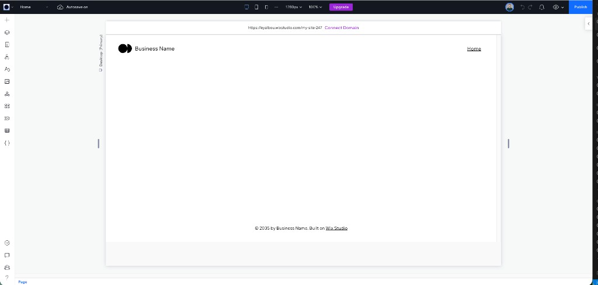
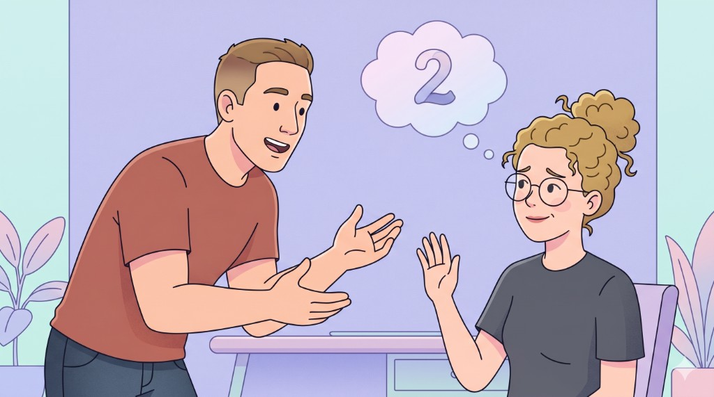
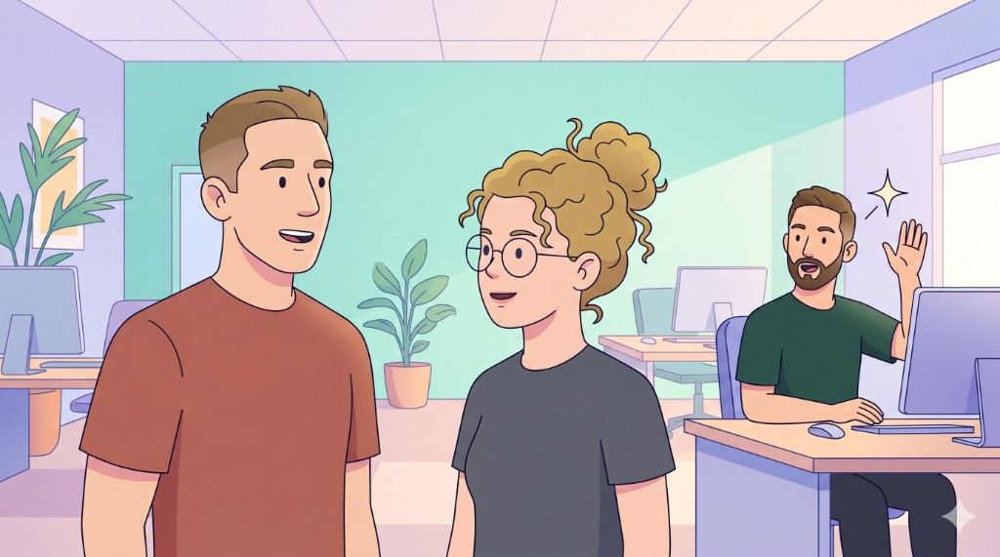
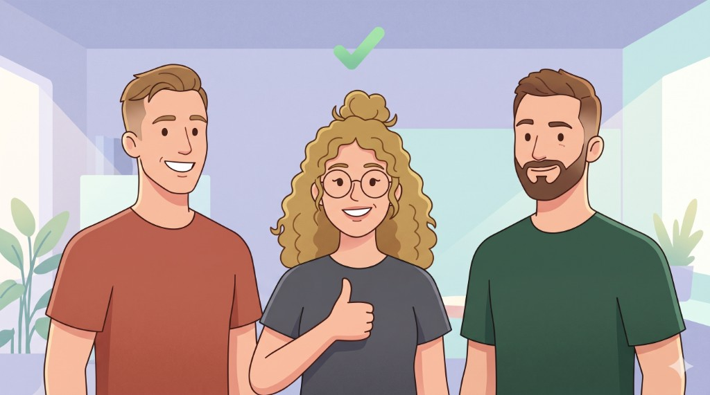

For first-session users on Blank sites, the Add Panel starts open. Components are visible the moment the canvas loads. One less click, infinitely more affordance.

ControlPanel collapsed. User must find and click it to begin.
A surface-level affordance change in this same Blank-site surface produced a top-line business outcome.
This test extends that precedent to a sibling surface that has never been touched: the Add Panel.
Why now: top-of-funnel changes compound. A small lift across ~32% of new users moves a big number.
04
How it started
How a side conversation became a live experiment.
1The spark. Rodi sees the funnel data. Lightbulb.

2Out of scope. Brings it to Miri. Studio 2 has the runway.

3I'll build it. Eyal overhears, raises a hand.

4Greenlit. Miri approves. Light governance, full ownership.
On Templates, the Add Panel occludes the very value the user just chose. Their first impression is a panel, not a polished site.
On Blank sites, there is nothing to occlude. The panel adds pure affordance with zero cost.
Context, not the component, decides.
06
The Test · A/B Framework
How we'll know it worked.
One funnel, three KPIs. A lift at any stage flows downstream to Premium.
Stage 01
Start Exploring
Users actually engage with the Add Panel: scroll, hover, discover what's inside.
→
Stage 02
Start Working
Meaningful creation: 8 components, 1st library, 6th media, 1st page, or completion, whichever comes first.
→
Outcome
Premium
The long-tail conversion. The metric the business ultimately cares about.
Why these three move together
These KPIs aren't independent. They're the same journey, measured at three depths. Prior A/B tests across the surface have consistently shown that pushing more users into meaningful creation reliably lifts Premium downstream. A win at any stage is a real signal. They all sit on the same chain.
Live
Population: first-session users on Blank sites · 1/3 of new users
A/B running · monitoring active
07
What's Next
The biggest loss is the idea you never test.
01
Moving the needle
We are not just here to read out the numbers. The BA job is to land quick wins, influence the product itself, and move metrics, not only report on them.
02
The test is the tool, not the trophy
An A/B test is the method for proving whether an idea actually works. Win or lose, we leave with a real answer instead of an opinion.
03
The idea you never tested
Your intuition as a BA has product-grade potential. The biggest loss is not a flat result, it is keeping a good idea in your head and never letting it see the light.
Click or press → to reveal the next idea
The takeaway: trust the intuition. Run the test. Let the data settle it.
08
Q & A
?
Questions, pushback, ideas.
What would you test next on first-session Blank-site users?